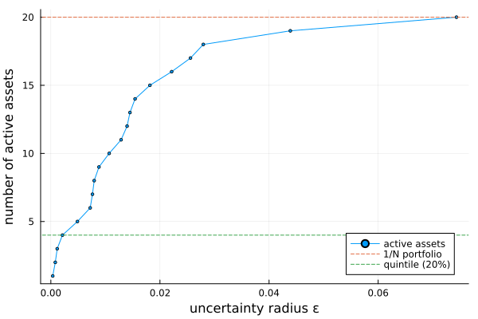

The source files can be found in examples/.
ℓ1 uncertainty sets: the quintile and 1/N portfolios
Two of the most stubbornly popular portfolios in practice have no theory behind them. The 1/N portfolio puts 1/N in every asset and ignores the market entirely. The quintile portfolio sorts assets by some characteristic — momentum, value, low volatility — and equally longs the top 20%, sometimes shorting the bottom 20%. Both are routinely dismissed as naive, and both routinely beat the theory-based portfolios they are compared against.
Zhou & Palomar [4] show they are not naive at all. They are the exact solutions of a robust optimisation problem: maximise the worst-case characteristic when the true characteristic lies somewhere in an ℓ1 ball around your estimate. The ball's radius ε is the only dial, and it decides how many assets you hold:
| radius | portfolio | active assets |
|---|---|---|
ε → 0 | trust the estimate completely | 1 (the single best asset) |
ε moderate | quintile portfolio | ~20% |
ε large | give up on the estimate | all of them, equally weighted (1/N) |
So the quintile portfolio is what you get when you half believe your return forecast, and the 1/N portfolio is what you get when you do not believe it at all. Neither is a heuristic; they are the answers to a question nobody realised they were asking.
Because of that, this library ships no quintile optimiser. An ℓ1 ball is an uncertainty set, so the quintile portfolio is an ordinary MeanRisk problem with a particular ucs — and it composes with every constraint in the library for free (ADR 0032). This page is a deep dive: the ε sweep that produces the table above, all of the paper's models, ranking on a characteristic other than return, and the classical portfolios the paper benchmarks against.
Reach for an ℓ1 set when you have a ranking you half-trust. Its ergonomics are unusual: rather than tuning ε (which has no meaningful scale — see section 3), you say how many assets you want to hold and let ActiveAssetsUncertaintyAlgorithm solve for the radius. Reach for a box or ellipsoidal set instead when you want to be robust to the magnitude of estimation error rather than to the ranking.
using PortfolioOptimisers, PrettyTables, StatsPlots, Statistics, LinearAlgebra, HiGHS, Clarabelresfmt = (v, i, j) -> begin if j == 1 return v else return isa(v, AbstractFloat) ? "$(round(v*100, digits=2)) %" : v endend;1. Data and solver
The same S&P 500 slice as the other examples. Every model on this page is a linear program — the worst case over an ℓ1 ball is an infinity norm, and an infinity norm is linear once epigraphed — so HiGHS is all we need. No conic solver, no quadratic term.
using CSV, TimeSeries, DataFramesX = TimeArray(CSV.File(joinpath(@__DIR__, "..", "SP500.csv.gz")); timestamp = :Date)[(end - 252):end]rd = prices_to_returns(X)pr = prior(EmpiricalPrior(), rd)slv = Solver(; name = :highs, solver = HiGHS.Optimizer, check_sol = (; allow_local = true, allow_almost = true), settings = Dict("log_to_console" => false))N = size(rd.X, 2)202. The recipe
Three pieces do the work:
ArithmeticReturnwith aucs— makes the return worst-case rather than nominal.MaximumReturn— the objective. There is no risk term in this problem at all.NoRisk— says so explicitly.
That last one deserves a word. MeanRisk requires a risk measure, so without NoRisk the default Variance would be built and then thrown away by the objective — dragging second-order cone constraints into a linear program and forcing a conic solver on it. NoRisk contributes nothing and keeps the problem an LP.
function quintile(ucs; kwargs...) opt = JuMPOptimiser(; pe = pr, slv = slv, ret = ArithmeticReturn(; ucs = ucs), kwargs...) return optimise(MeanRisk(; opt = opt, r = NoRisk(), obj = MaximumReturn()))endlong_only(ucs) = quintile(ucs; bgt = 1.0, wb = WeightBounds(; lb = 0.0, ub = 1.0)).w;3. The radius has no scale — so do not pick it by hand
ε is dimensionally a sum of characteristic differences, so its scale is inherited from the data rather than being a property of the model. On the daily returns below the interesting values live around 10⁻³; on annualised returns everything shifts by ~250×. There is no memorable "sensible" number, and the intuition you have for percentages is actively misleading: ε = 0.05 looks like a modest 5% of something, but here it is close to the top of the range and gives essentially the 1/N portfolio.
Watch what the whole useful range actually looks like:
mu_sorted = sort(pr.mu; rev = true)# The radius at which the k-th asset joins the portfolio (Lemma 2 of the paper).ladder(k) = sum(mu_sorted[i] - mu_sorted[k] for i in 1:k)pretty_table(DataFrame(; portfolio = ["single best asset", "quintile (20%)", "half (50%)", "1/N (everything)"], radius = [ladder(2) / 2, (ladder(4) + ladder(5)) / 2, (ladder(10) + ladder(11)) / 2, ladder(N)]); formatters = [(v, i, j) -> isa(v, Number) ? string(round(v; sigdigits = 3)) : v])┌───────────────────┬──────────┐
│ portfolio │ radius │
│ String │ Float64 │
├───────────────────┼──────────┤
│ single best asset │ 0.000346 │
│ quintile (20%) │ 0.00213 │
│ half (50%) │ 0.0107 │
│ 1/N (everything) │ 0.0591 │
└───────────────────┴──────────┘The entire span from "one asset" to "all of them" lives inside [0, 0.06]. This is why you should not tune ε directly, and why ActiveAssetsUncertaintyAlgorithm exists: it inverts the paper's closed forms so you specify the thing you actually have an opinion about — how many assets do I want to hold? — and it solves for the radius.
active = 0.2 selects the radius that would activate 20% of assets on the bare problem (budget and sign constraints, nothing else). Add weight bounds, cardinality, or sector constraints — which is the entire point of this being an uncertainty set — and the realised count can differ. It is a unit conversion for an opaque parameter, not a promise. If you need a hard bound on the number of holdings, use card.
ue = CharacteristicUncertaintySet(; pe = EmpiricalPrior(), alg = L1UncertaintySetAlgorithm(; method = ActiveAssetsUncertaintyAlgorithm(; active = 0.2)))mu_ucs(ue, rd)L1UncertaintySet
eps ┼ Float64: 0.0021257470647240173
sd ┼ nothing
mu ┴ 20-element Vector{Float64}
4. The ε sweep: one dial, three portfolios
This is the paper's central claim, reproduced. We sweep the radius from "trust the estimate" to "distrust it entirely" and watch the portfolio walk from a single asset to 1/N — with the quintile portfolio sitting in the middle, not as an approximation but as the exact optimum.
targets = 1:Nsweep = map(targets) do q alg = L1UncertaintySetAlgorithm(; method = ActiveAssetsUncertaintyAlgorithm(; active = q)) eps = mu_ucs(CharacteristicUncertaintySet(; alg = alg), rd).eps w = long_only(L1UncertaintySet(; eps = eps)) return (; q = q, eps = eps, active = count(>(1e-6), w), max_weight = maximum(w), hhi = sum(abs2, w))endsweep_df = DataFrame(sweep)pretty_table(sweep_df[[1, 2, 4, 8, 12, 20], :]; formatters = [(v, i, j) -> if isa(v, AbstractFloat) string(round(v; sigdigits = 3)) else v end])┌───────┬──────────┬────────┬────────────┬─────────┐
│ q │ eps │ active │ max_weight │ hhi │
│ Int64 │ Float64 │ Int64 │ Float64 │ Float64 │
├───────┼──────────┼────────┼────────────┼─────────┤
│ 1 │ 0.000346 │ 1 │ 1.0 │ 1.0 │
│ 2 │ 0.000813 │ 2 │ 0.5 │ 0.5 │
│ 4 │ 0.00213 │ 4 │ 0.25 │ 0.25 │
│ 8 │ 0.00795 │ 8 │ 0.125 │ 0.125 │
│ 12 │ 0.014 │ 12 │ 0.0833 │ 0.0833 │
│ 20 │ 0.0744 │ 20 │ 0.05 │ 0.05 │
└───────┴──────────┴────────┴────────────┴─────────┘The realised active count tracks the request exactly, and the largest weight falls as 1/m — the portfolio is always equally weighted over its active set, which is the quintile construction. Plotted against the radius:
plot(sweep_df.eps, sweep_df.active; label = "active assets", xlabel = "uncertainty radius ε", ylabel = "number of active assets", legend = :bottomright, marker = :circle, markersize = 2)hline!([N]; label = "1/N portfolio", linestyle = :dash)hline!([round(Int, 0.2 * N)]; label = "quintile (20%)", linestyle = :dash)
5. Equal weights or inverse volatility? The scaled flag
The ball above assumes every asset's characteristic is estimated equally badly. That is a strong assumption — a volatile asset's mean return is obviously harder to pin down than a placid one's. Scaling the ball by each asset's volatility (scaled = true, the paper's A₁ set) encodes that, and the optimum changes shape: active assets are no longer equally weighted but weighted inversely to their volatility.
The remarkable part is that nothing about the problem changed — only the geometry of the ball. Inverse-volatility weighting falls out.
sd_hat = sqrt.(diag(pr.sigma))# The volatility-adjusted ladder (Lemma 9): same construction, divided through by sigma.sd_by_mu = sd_hat[sortperm(pr.mu; rev = true)]gs(k) = sum((mu_sorted[i] - mu_sorted[k]) / sd_by_mu[i] for i in 1:k)w_equal = long_only(L1UncertaintySet(; eps = (ladder(4) + ladder(5)) / 2))w_invvol = long_only(L1UncertaintySet(; eps = (gs(4) + gs(5)) / 2, sd = sd_hat))act = findall(>(1e-6), w_invvol)pretty_table(DataFrame(; asset = rd.nx[act], volatility = sd_hat[act], equal_weighted = w_equal[act], inverse_vol = w_invvol[act], predicted = (1 ./ sd_hat[act]) ./ sum(1 ./ sd_hat[act])); formatters = [resfmt])┌────────┬────────────┬────────────────┬─────────────┬───────────┐
│ asset │ volatility │ equal_weighted │ inverse_vol │ predicted │
│ String │ Float64 │ Float64 │ Float64 │ Float64 │
├────────┼────────────┼────────────────┼─────────────┼───────────┤
│ CVX │ 2.07 % │ 25.0 % │ 24.32 % │ 24.32 % │
│ MRK │ 1.25 % │ 25.0 % │ 40.15 % │ 40.15 % │
│ RRC │ 3.96 % │ 25.0 % │ 12.72 % │ 12.72 % │
│ XOM │ 2.21 % │ 25.0 % │ 22.81 % │ 22.81 % │
└────────┴────────────┴────────────────┴─────────────┴───────────┘inverse_vol matches predicted to the digit — that is Lemma 9 of the paper, and it is an equality, not an approximation. Push the radius up and you get the full inverse-volatility portfolio over the whole universe, the counterpart of 1/N:
w_iv_all = long_only(L1UncertaintySet(; eps = gs(N) * 1.5, sd = sd_hat))isapprox(w_iv_all, (1 ./ sd_hat) ./ sum(1 ./ sd_hat); atol = 1e-6)true6. Long-short: the dollar-neutral quintile
Short the bottom as well as longing the top. In the paper this needs Lemma 5's antisymmetric-pairing argument to become tractable; here it is just a budget. bgt = 0 makes the portfolio dollar-neutral, sbgt = 0.5 puts half the gross exposure on each side, and the antisymmetric structure — the i-th best paired against the i-th worst, at equal and opposite weights — emerges from the LP rather than being imposed.
function f(m) return sum(mu_sorted[i] - mu_sorted[m] for i in 1:m) + sum(mu_sorted[N - m + 1] - mu_sorted[N - j + 1] for j in 1:m)endw_ls = quintile(L1UncertaintySet(; eps = (f(4) + f(5)) / 2); bgt = 0.0, sbgt = 0.5, wb = WeightBounds(; lb = -1.0, ub = 1.0)).wnz = findall(>(1e-6), abs.(w_ls))pretty_table(DataFrame(; asset = rd.nx[nz], weight = w_ls[nz], side = ifelse.(w_ls[nz] .> 0, "long", "short")); formatters = [resfmt])┌────────┬─────────┬────────┐
│ asset │ weight │ side │
│ String │ Float64 │ String │
├────────┼─────────┼────────┤
│ AAPL │ -12.5 % │ short │
│ AMD │ -12.5 % │ short │
│ BAC │ -12.5 % │ short │
│ CVX │ 12.5 % │ long │
│ MRK │ 12.5 % │ long │
│ MSFT │ -12.5 % │ short │
│ RRC │ 12.5 % │ long │
│ XOM │ 12.5 % │ long │
└────────┴─────────┴────────┘Four long, four short, every weight ±1/(2m), net zero and gross one — Corollary 7, exactly.
(net = sum(w_ls), gross = sum(abs, w_ls))(net = 0.0, gross = 1.0)7. Budgets bound; they do not pin
Here is a property of the library worth knowing regardless of this page. The long and short variables are upper bounds on the positive and negative parts of w, so sbgt = 0.3 means at most 30% short. Usually that is invisible, because the objective pushes against the budget and the bound binds anyway.
It stops being invisible at extreme radii. Past the point where every asset is active, the paper keeps holding its 50/50 portfolio even though the worst-case return has gone negative — its ‖w‖₁ = 1 is a full-investment mandate. The relaxed problem would rather hold cash. Since an all-zero portfolio is never a useful answer, the library reports it as a structured failure rather than returning it:
eps_extreme = f(N ÷ 2) * 1.5relaxed = quintile(L1UncertaintySet(; eps = eps_extreme); bgt = 0.0, sbgt = 0.5, wb = WeightBounds(; lb = -1.0, ub = 1.0))isa(relaxed.jr.retcode, PortfolioOptimisers.OptimisationFailure)trueSetting xbgt = true pins the decomposition exactly, reproducing the paper's mandate — you stay fully invested and accept the loss:
exact = quintile(L1UncertaintySet(; eps = eps_extreme); bgt = 0.0, sbgt = 0.5, xbgt = true, wb = WeightBounds(; lb = -1.0, ub = 1.0))(retcode = typeof(exact.jr.retcode).name.name, gross = sum(abs, exact.w), active = count(>(1e-6), abs.(exact.w)))(retcode = :OptimisationSuccess, gross = 1.0, active = 20)It needs a sign indicator per asset and the big-M relaxation is weak. On twenty assets that costs seconds; on a real universe it can be prohibitive. It reuses the long/short binaries that card, lt/st and fixed fees already build, so it is free to add alongside them — but on its own it introduces them. Inside the radius range that produces the quintile and 1/N portfolios the two agree exactly, so leave it off unless the full-investment mandate is genuinely part of your problem.
8. Market-neutral: gross pinned, net free
A market-neutral portfolio wants βᵀw = 0 and a fixed gross exposure — but says nothing about the net. That combination is what gbgt is for: bgt and sbgt constrain net and gross only together, so they cannot express "gross = 1, net free". (Without a gross constraint the problem is unbounded, so this is not optional.)
The paper notes the quintile ranking structure breaks down here — the active set no longer follows a simple ordering — but the problem itself stays perfectly convex.
beta = vec(cor(rd.X, mean(rd.X; dims = 2)))beta = abs.(beta) .+ 0.5 ## a positive market beta per asset, as the paper assumeslc_mn = LinearConstraint(; eq = PartialLinearConstraint(reshape(beta, 1, N), [0.0]))w_mn = quintile(L1UncertaintySet(; eps = 0.002); bgt = nothing, gbgt = 1.0, xbgt = true, lcse = lc_mn, wb = WeightBounds(; lb = -1.0, ub = 1.0)).w(gross = sum(abs, w_mn), net = sum(w_mn), market_exposure = dot(beta, w_mn))(gross = 0.9999999999999998, net = 0.09472668024976355, market_exposure = 0.0)Gross is pinned at 1, market exposure is 0, and the net floats to whatever the optimum wants — the combination that was previously inexpressible.
9. The characteristic need not be a return
The paper is explicit that "expected return" is incidental: the construction works for any per-asset characteristic, and its Table III ranks on estimated volatility instead.
The characteristic belongs to the return term, so that is where it goes. ArithmeticReturn's mu slot takes the vector itself, or — as here — the estimator that computes it, which is resolved against the optimisation's own prior when the model is built (ADR 0051). Naming the estimator rather than pasting a vector is what lets the ranking refit per cross-validation fold and per meta-optimiser subset:
w_vol = optimise(MeanRisk(; r = NoRisk(), obj = MaximumReturn(), opt = JuMPOptimiser(; pe = pr, slv = slv, bgt = 1.0, wb = WeightBounds(; lb = 0.0, ub = 1.0), ret = ArithmeticReturn(; mu = StandardDeviationExpectedReturns(), ucs = L1UncertaintySet(; eps = 0.05))))).wsd_assets = sqrt.(diag(pr.sigma))act_vol = findall(>(1e-6), w_vol)pretty_table(DataFrame(; asset = rd.nx[act_vol], volatility = sd_assets[act_vol], weight = w_vol[act_vol]); formatters = [resfmt])┌────────┬────────────┬─────────┐
│ asset │ volatility │ weight │
│ String │ Float64 │ Float64 │
├────────┼────────────┼─────────┤
│ AAPL │ 2.24 % │ 14.29 % │
│ AMD │ 3.84 % │ 14.29 % │
│ BBY │ 2.85 % │ 14.29 % │
│ GE │ 2.19 % │ 14.29 % │
│ MSFT │ 2.21 % │ 14.29 % │
│ RRC │ 3.96 % │ 14.29 % │
│ XOM │ 2.21 % │ 14.29 % │
└────────┴────────────┴─────────┘An earlier version of this page ranked on volatility by building the prior on StandardDeviationExpectedReturns and leaving the term bare. On this page the two routes agree to the last bit, because NoRisk means nothing else reads μ. They stop agreeing the moment anything does: every moment risk measure centres on the prior's μ, as do the value-at-risk family and MaximumRatio's normalisation. Swap NoRisk for a mean-centred measure and the hijack silently measures deviation about a vector of volatilities: the same nominal problem then solves to a different portfolio, and nothing warns. The prior's μ is the universe's expected returns; a ranking is not one, so it rides on the term.
Mind the direction. The objective maximises the characteristic, so ranking on volatility puts the most volatile assets first — the opposite of the Low Volatility factor the paper is chasing. A characteristic is only "attractive" if larger is better; when it is not, negate it. The mu slot takes a plain vector too:
lowvol = ArithmeticReturn(; mu = -sd_assets, ucs = L1UncertaintySet(; eps = 0.05))w_lowvol = optimise(MeanRisk(; r = NoRisk(), obj = MaximumReturn(), opt = JuMPOptimiser(; pe = pr, slv = slv, bgt = 1.0, wb = WeightBounds(; lb = 0.0, ub = 1.0), ret = lowvol))).wact_lv = findall(>(1e-6), w_lowvol)pretty_table(DataFrame(; asset = rd.nx[act_lv], volatility = sd_assets[act_lv], weight = w_lowvol[act_lv]); formatters = [resfmt])┌────────┬────────────┬─────────┐
│ asset │ volatility │ weight │
│ String │ Float64 │ Float64 │
├────────┼────────────┼─────────┤
│ HD │ 1.97 % │ 9.09 % │
│ JNJ │ 1.1 % │ 9.09 % │
│ JPM │ 1.88 % │ 9.09 % │
│ KO │ 1.24 % │ 9.09 % │
│ LLY │ 1.71 % │ 9.09 % │
│ MRK │ 1.25 % │ 9.09 % │
│ PEP │ 1.22 % │ 9.09 % │
│ PFE │ 1.7 % │ 9.09 % │
│ PG │ 1.38 % │ 9.09 % │
│ UNH │ 1.53 % │ 9.09 % │
│ WMT │ 1.68 % │ 9.09 % │
└────────┴────────────┴─────────┘That is the Low Volatility factor: the quietest names in the universe, equally weighted. Compare the two selections — they are disjoint, and they come from the same machinery with a minus sign between them.
(ranked_on_high_vol = round.(extrema(sd_assets[act_vol]); sigdigits = 3), ranked_on_low_vol = round.(extrema(sd_assets[act_lv]); sigdigits = 3), universe = round.(extrema(sd_assets); sigdigits = 3))(ranked_on_high_vol = (0.0219, 0.0396), ranked_on_low_vol = (0.011, 0.0197), universe = (0.011, 0.0396))10. Several terms at once, and what a floor costs
A ranking is one thing to want and an expected return is another, and an optimiser takes both: ret accepts a vector of return terms, exactly as r accepts a vector of risk measures. The model's return expression is their weighted sum Σᵢ scaleᵢ · retᵢ — there is no scalariser on this side and there is not going to be one (ADR 0052).
The interesting term is the one that stays out of that sum. Every term carries a JuMPReturnsSettings bundle, and setting rte = false keeps the term out of the objective while its own lb still binds. That is a constraint-only return term: it shapes the feasible set and is never rewarded.
So the low-volatility quintile above can be asked what it costs to keep a floor under the portfolio's ordinary expected return. The floor term states no mu of its own, so it falls back to the prior's — the real expected returns, which is exactly the quantity the hijack would have overwritten:
floor_term(lb) = ArithmeticReturn(; settings = JuMPReturnsSettings(; rte = false, lb = lb))function lowvol_with_floor(lb) return optimise(MeanRisk(; r = NoRisk(), obj = MaximumReturn(), opt = JuMPOptimiser(; pe = pr, slv = slv, bgt = 1.0, wb = WeightBounds(; lb = 0.0, ub = 1.0), ret = [lowvol, floor_term(lb)]))).wendfloors = [0.0, 0.0005, 0.001, 0.0015]ws = [iszero(lb) ? w_lowvol : lowvol_with_floor(lb) for lb in floors]pretty_table(DataFrame(; floor = ["none", "0.05 %", "0.10 %", "0.15 %"], names = [count(>(1e-6), w) for w in ws], expected_return = [dot(pr.mu, w) for w in ws], avg_volatility = [dot(sd_assets, w) for w in ws]); formatters = [resfmt])┌────────┬───────┬─────────────────┬────────────────┐
│ floor │ names │ expected_return │ avg_volatility │
│ String │ Int64 │ Float64 │ Float64 │
├────────┼───────┼─────────────────┼────────────────┤
│ none │ 11 │ 0.03 % │ 1.51 % │
│ 0.05 % │ 11 │ 0.05 % │ 1.51 % │
│ 0.10 % │ 10 │ 0.1 % │ 1.52 % │
│ 0.15 % │ 6 │ 0.15 % │ 1.65 % │
└────────┴───────┴─────────────────┴────────────────┘The floor binds exactly — the realised expected return sits on it at every level — and the price is paid in the currency the first term is denominated in: the portfolio holds fewer names and louder ones as the floor rises. That is the trade the two terms were written to price, and neither term could express it alone.
Two things to keep in mind when a model carries several terms:
scaleis a weight, not a normalisation. The terms are summed as written, so two terms are not averaged unless you halve both. Fees follow the same arithmetic: a term charges them only if itsfeeflag says so, so two flagged terms atscale = 1subtract the fees twice. That is a statement about the configuration, not a defect — setfeeandmictofalseon any term that is not in return units.rte = falsecovers two different wants. A term that is not in return units has no business in a sum of returns; and a term that is in return units, like the floor above, may still be wanted as a bound alone. The flag says only "this term does not enter the objective" — itslbbinds either way.
11. Composing with constraints
None of the above is special-cased, which is the whole reason the quintile portfolio is an uncertainty set rather than an optimiser. Every constraint in the library still applies. Cap each position at 15% and the quintile spreads out to obey it:
eps_q = (ladder(4) + ladder(5)) / 2w_free = long_only(L1UncertaintySet(; eps = eps_q))w_capped = quintile(L1UncertaintySet(; eps = eps_q); bgt = 1.0, wb = WeightBounds(; lb = 0.0, ub = 0.15)).wpretty_table(DataFrame(; portfolio = ["unconstrained", "capped at 15%"], active = [count(>(1e-6), w_free), count(>(1e-6), w_capped)], largest = [maximum(w_free), maximum(w_capped)]); formatters = [resfmt])┌───────────────┬────────┬─────────┐
│ portfolio │ active │ largest │
│ String │ Int64 │ Float64 │
├───────────────┼────────┼─────────┤
│ unconstrained │ 4 │ 25.0 % │
│ capped at 15% │ 7 │ 15.0 % │
└───────────────┴────────┴─────────┘Note the active count moved away from the requested four — exactly the calibration caveat from section 3. The radius still says "four assets"; the weight cap says otherwise, and the cap wins.
12. The benchmarks
The paper's motivation is that these heuristics beat the theory-based portfolios. Those are all ordinary MeanRisk recipes. Note that GMRP — maximise return, no risk term — is the same NoRisk trick from section 2, and is the ε → 0 limit of everything above.
Three of the four carry a genuine variance term, so HiGHS is not enough for them — unlike every ℓ1 model on this page, which is why the rest of the page never needed a conic solver. Clarabel covers all four.
cslv = Solver(; name = :clarabel, solver = Clarabel.Optimizer, check_sol = (; allow_local = true, allow_almost = true), settings = Dict("verbose" => false))function lo_opt(; kwargs...) return JuMPOptimiser(; pe = pr, slv = cslv, bgt = 1.0, wb = WeightBounds(; lb = 0.0, ub = 1.0), kwargs...)endbenchmarks = Dict("GMVP (min variance)" => MeanRisk(; opt = lo_opt(), r = Variance(), obj = MinimumRisk()), "MVP (mean-variance)" => MeanRisk(; opt = lo_opt(), r = Variance(), obj = MaximumUtility(; l = 25.0)), "GMRP (max return)" => MeanRisk(; opt = lo_opt(), r = NoRisk(), obj = MaximumReturn()), "MSRP (max Sharpe)" => MeanRisk(; opt = lo_opt(), r = Variance(), obj = MaximumRatio()));Solve them, and line the results up against the ℓ1 portfolios from this page. The paper's comparison is in-sample on the same estimates every portfolio was built from — it is a description of what each objective does, not a claim about out-of-sample performance.
# `ladder(N)` is the exact radius at which the last asset joins, so it sits on the knife edge# and leaves the twentieth at zero. Step past it to land on 1/N proper.w_1n = long_only(L1UncertaintySet(; eps = ladder(N) * 1.25))rows = [(; portfolio = name, w = optimise(mre).w) for (name, mre) in sort(collect(benchmarks); by = first)]append!(rows, [(; portfolio = "1/N (ε large)", w = w_1n), (; portfolio = "quintile (ε mid)", w = w_free), (; portfolio = "inverse vol (ε large, scaled)", w = w_iv_all)])bench_df = DataFrame(; portfolio = [r.portfolio for r in rows], ret = [dot(pr.mu, r.w) for r in rows], vol = [sqrt(dot(r.w, pr.sigma, r.w)) for r in rows], sharpe = [dot(pr.mu, r.w) / sqrt(dot(r.w, pr.sigma, r.w)) for r in rows], active = [count(>(1e-6), r.w) for r in rows], largest = [maximum(r.w) for r in rows])pretty_table(bench_df; formatters = [(v, i, j) -> if j == 4 string(round(v; sigdigits = 3)) elseif isa(v, AbstractFloat) "$(round(v*100, digits=3)) %" else v end])┌───────────────────────────────┬─────────┬─────────┬─────────┬────────┬──────────┐
│ portfolio │ ret │ vol │ sharpe │ active │ largest │
│ String │ Float64 │ Float64 │ Float64 │ Int64 │ Float64 │
├───────────────────────────────┼─────────┼─────────┼─────────┼────────┼──────────┤
│ GMRP (max return) │ 0.264 % │ 2.207 % │ 0.119 │ 1 │ 100.0 % │
│ GMVP (min variance) │ 0.077 % │ 0.934 % │ 0.0826 │ 11 │ 36.974 % │
│ MSRP (max Sharpe) │ 0.199 % │ 1.208 % │ 0.164 │ 10 │ 67.266 % │
│ MVP (mean-variance) │ 0.133 % │ 0.989 % │ 0.134 │ 7 │ 42.871 % │
│ 1/N (ε large) │ 0.015 % │ 1.283 % │ 0.0115 │ 20 │ 5.0 % │
│ quintile (ε mid) │ 0.202 % │ 1.884 % │ 0.107 │ 4 │ 25.0 % │
│ inverse vol (ε large, scaled) │ 0.025 % │ 1.143 % │ 0.0215 │ 20 │ 8.175 % │
└───────────────────────────────┴─────────┴─────────┴─────────┴────────┴──────────┘Every objective wins its own column and nothing else: GMVP takes the lowest volatility, GMRP the highest return, MSRP the best ratio. GMRP is worth a second look — it holds a single asset at 100%, which is exactly the ε → 0 corner of section 4. Maximum return with no robustness is the degenerate end of this page's sweep.
The ℓ1 portfolios lose every column, and the two extreme ones lose badly: 1/N and inverse-vol post the lowest returns and Sharpes in the table. This is not a defect being glossed over — it is arithmetic. Each benchmark is maximising the very quantity it is scored on, against the very estimates the score is computed from, so it cannot be beaten on its own metric in sample. A portfolio that half-ignores μ by construction will always look worse on a μ-derived column here.
The last two columns are where the ℓ1 portfolios are actually saying something. GMRP bets everything on one asset and MSRP puts 67% in its largest position; both are inferences drawn from 252 days of data as though they were certain. The quintile spreads across four names at 25% each, and 1/N across all twenty. That concentration is the risk the in-sample columns cannot price, and the trade only pays out of sample — which this page does not test. See the cross validation examples for the machinery that does.
13. Takeaways
- The quintile and 1/N portfolios are exact solutions of a robust optimisation problem, not heuristics.
εis the only dial and it decides how many assets you hold. - This library has no quintile optimiser on purpose. It is
MeanRisk(; r = NoRisk(), obj = MaximumReturn())over an ℓ1ucs, so it composes with every constraint you already know (ADR 0032). - Do not tune
ε. It has no scale. UseActiveAssetsUncertaintyAlgorithmand say how many assets you want — but treat it as a calibration, not a guarantee. scaled = trueswaps equal weighting for inverse-volatility weighting by changing only the geometry of the ball.- Budgets bound realised exposure rather than pinning it;
xbgtpins them, at the price of a MILP. - The characteristic need not be a return —
ArithmeticReturn'smuslot ranks on whatever you put in it, including the estimator that computes it. Put it on the term, never in the outer prior, whoseμevery mean-centred risk measure reads. Mind the direction: the objective maximises, so negate any characteristic where smaller is better. rettakes several terms, summed with weights (ADR 0052). A term withrte = falsestays out of the objective and keeps its ownlb, which is how you price what a floor on one quantity costs in another.
This page was generated using Literate.jl.